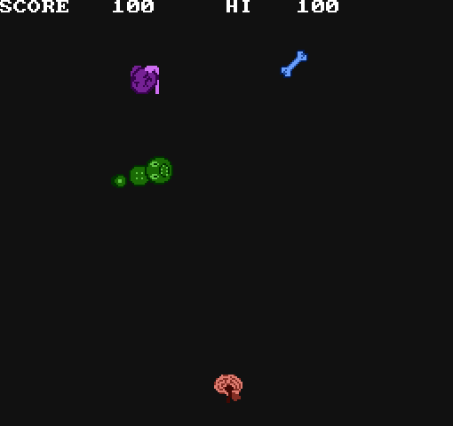

| Title | Kori Yogan Mushi |
| Category | Games |
| Language | Javascript |
| Platform | TAPEGRO |
| State | Finished |
| Started | 25 October 2019 |
| MS-DOS/Win32 | Download |
A game made for Halloween 2019. It is a score attack arcade shooter, in NES style. You play as a worm getting rid of corpse parts.
It features music by nene from Open Game Art.
The controls were optimised for 2 buttons + D-pad, and the sprites use palettes of 3 colours, to fit with NES restrictions.
It could potentially be ported to the NES, but it could incur in slowdown and sprite flickering with increasing number of enemies - the game would have to be reworked to offer the same challenge with smaller number of enemies on screen.
It was developed over a few days in TAPEGRO, my own games framework thingie. It was a joy to go from a prototype to a small game that is simple yet fun.
I plan on making a similar Christmas-themed game.
I have hopes that it may be someday featured in the Alakajam tournament.